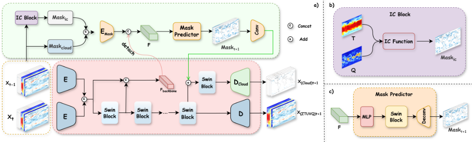
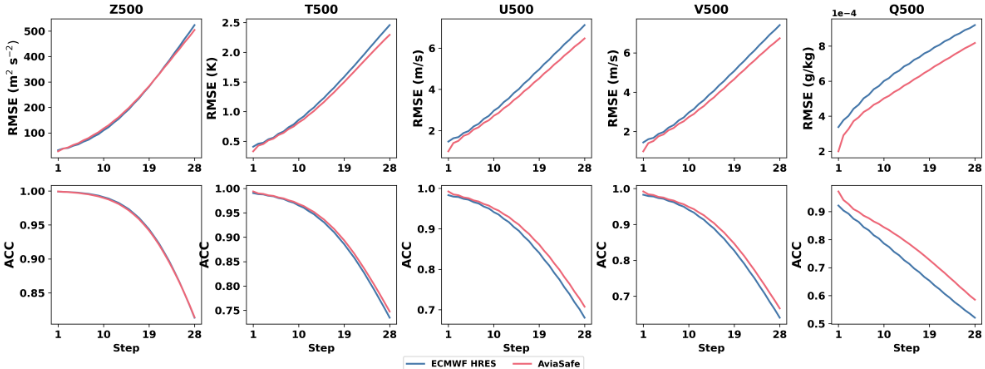
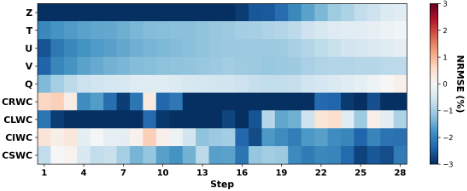
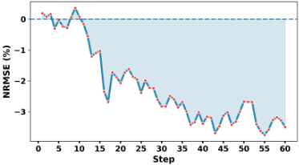
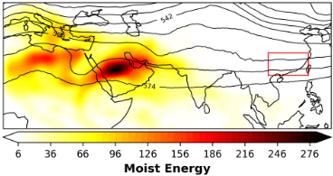
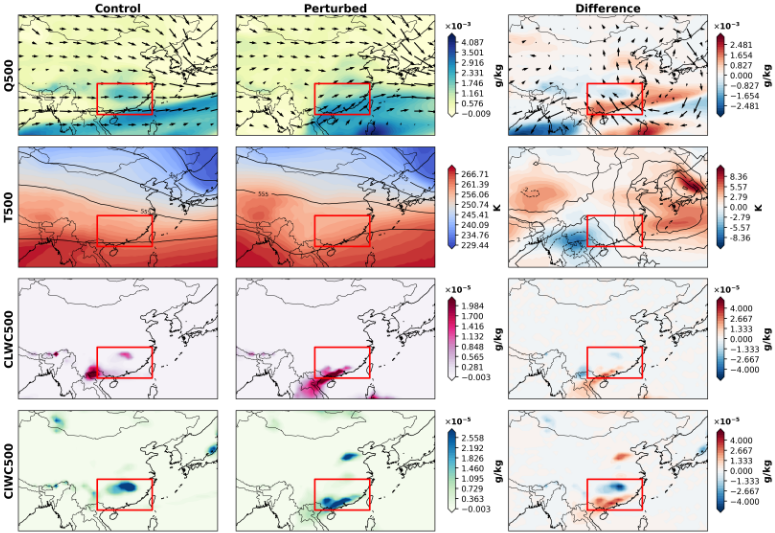
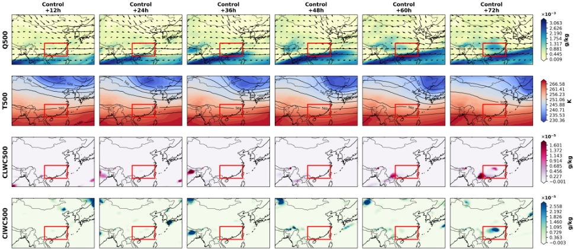
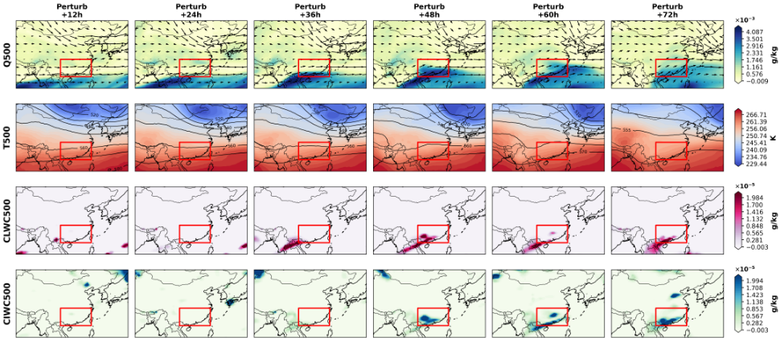

AviaSafe：面向航空安全关键云预报的物理信息驱动数据模型
该论文针对现有 AI 天气预报模型只能预测聚合水汽变量、无法区分对航空安全至关重要的云微物理物种的问题，提出 AviaSafe——一个分层、物理信息引导的神经预报模型，直接预报云冰/液/雨/雪四种水凝物含量至 7 天时效。方法上采用基于 Swin Transformer V2 的 Forecasting Backbone 与 Physics-Informed Guidance Head：先预测未来云空间 mask，再在 mask 引导下量化物种浓度，并将航空气象学的 Icing Condition (IC) 指数作为无可学习参数的物理约束嵌入网络。基于 ERA5 数据训练后，模型在 93.7% 的变量/时效组合上优于基线，500 hPa 关键变量上与 ECMWF HRES 相当或更优，消融显示物理先验使 CIWC50 RMSE 再降 5.5%。该工作属于 AI 气象应用领域，与团队内存/互连 IP 架构、RTL 设计与验证各能力域均无实质关联。
现有 AI 天气预报模型（GraphCast、Pangu-Weather、FuXi 等）仅预测总降水或比湿等聚合水汽变量，无法分离云相位；而 CIWC/CLWC/CRWC/CSWC 四种云水物种场稀疏、不连续、重尾，标准神经网络易过度平滑关键特征或产生伪影。传统 NWP 虽可显式模拟云微物理过程，但计算代价高昂，且在冰点以下常将液态水过早转化为冰相、系统性低估云液水含量，导致航空积冰风险漏报。论文要解决的是在保证物理合理性的前提下，直接进行全球、6 小时间隔、长达 7 天的相分辨云微物理预报，以支撑航路规划与发动机积冰风险评估。
分层架构由两部分组成：(1) Forecasting Backbone：Encoder E 加 Swin Transformer V2 级联，后接两个解耦解码器——背景变量（Z/T/Q/U/V）直接经 D 回归，云变量路径先将特征与预测 mask 的编码做逐元素相加、经专用 Swin Block 精炼后由 D_Cloud 输出；backbone 多尺度特征 F_backbone 做梯度截断（detach）后供引导分支使用，避免相互干扰。(2) Physics-Informed Guidance Head：将 52 通道诊断 mask（云存在二值图）与 13 通道 IC 指数物理 mask（由湿度因子与温度因子相乘构成，无可学习参数）拼接为 65 通道输入，经 E_Mask 编码后与 F_backbone 拼接，通过 MLP+Swin Block+Deconv 预测未来云 mask Mask_t+1，再经卷积生成引导特征注入云预测路径。损失为纬度加权 Charbonnier L1（主损失）与 Focal Loss（γ=1.5、α_t=0.25，辅助 mask 分割）的加权组合（λ=1）。训练基于 ERA5（1°×1°、13 层气压层、117 通道），2018-2023 训练、2024 测试，PyTorch、2 块 NVIDIA A100、AdamW、batch size 8 共 32000 次迭代。另将 CNOP（SPG+BB 步长）从气象可预报性研究改造为时空预报的初始扰动敏感性分析，用于物理可解释性验证。
7 天预报的全部变量/时效组合中，AviaSafe 在 93.7% 上 NRMSE 优于基线；云变量中 CRWC 有 85.7% 时效、CLWC 有 89.3% 时效优于基线
背景变量（Z/T/U/V/Q）的 NRMSE 差值为负（即改善）的预报时效占比超过 92%
消融实验：完整模型相对次优变体在 CIWC50 上 RMSE 降低 5.5%，在 CRWC250 上降低 2.9%；w/o (MP, IC) 变体已在 9 个变量中的 8 个上优于 Baseline
与 ECMWF HRES 对比：500 hPa 五个关键变量在 7 天内 RMSE 一致更好或相当（Q500、T500 改善明显），ACC 相当且持续占优
CIWC 的 NRMSE 改善在 3-7 天区间显著，且随预报时效不衰减、在最长 15 天范围内持续扩大
据论文所述，这是首个提供全球云微物理物种（CLWC/CIWC/CRWC/CSWC）预报的数据驱动模型。与以往将原始大气方程（ODE 求解器）或参数化方案整体用深度学习 emulate 的做法不同，本文将航空气象经验性 IC 指数作为无可学习参数的物理先验直接嵌入网络结构；并采用'先定位云区、再量化强度'的 mask 引导分层设计，配合梯度截断的 backbone 特征解耦与针对云场极端稀疏的 Focal Loss，区别于在聚合水汽变量上优化损失的已有 AI 预报器。
相关度级别：low
命中能力域：无明显对应
理由：（注：任务头部给出的标题 TT-SEAL 与正文论文 AviaSafe 不一致，本评估严格依据正文内容。）论文属于 AI 气象预报（航空安全云微物理预测）领域，全文不涉及内存/互连 IP 架构与微架构、可综合 RTL 设计与时序收敛、UVM/覆盖率驱动验证、形式验证与等效性检查、仿真加速/Emulation/FPGA 原型或 EDA/验证自动化等团队七个能力域中的任何核心技术；其技术栈（PyTorch、NVIDIA A100 训练、ERA5 数据）与团队的 IP 设计交付与验证工具链无交集。唯一的间接联系是 CNOP 对抗性初始扰动分析在概念上类似敏感性/扰动注入思路，以及'领域物理先验作为不可学习约束嵌入网络'的设计范式，但均不构成对团队能力域的实质命中。
建议动作：暂不相关
arXiv:2602.22298v1 [cs.LG] 2026年2月25日
Zijian Zhu 1 , 3 ∗ Qiusheng Huang 1 , 2 , 3 , ∗ Anboyu Guo 3 , 4 , 5 Xiaohui Zhong 1 , 3 Hao Li 1 , 2 , 3 ,
1 复旦大学人工智能创新与产业研究院
2 上海创新研究院
3 上海科学智能研究院
4 国家海洋环境预报中心
5 复旦大学大气与海洋科学系
∗
同等贡献 † 通讯作者：lihao lh@fudan.edu.cn
当前的AI天气预报模型能够预测常规大气变量，但无法区分对航空安全至关重要的云微物理物种。我们提出了AviaSafe，这是一种分层式、物理信息驱动的神经预报器，可对这四种水凝物进行全球范围的六小时间隔预报，预报时效长达7天。我们的方法应对了云预测所面临的独特挑战：极端稀疏性、不连续分布以及各物种之间复杂的微物理相互作用。我们引入航空气象学中的积冰条件（Icing Condition, IC）指数作为基于物理的约束，用于识别过冷水助长冰晶爆发性增长的区域。该模型采用分层架构，首先通过掩码注意力预测云的空间分布，随后在所识别的区域内量化各物种的浓度。在ERA5再分析数据上进行训练后，与基线相比，我们的模型在云物种方面取得了更低的均方根误差（RMSE），并且在7天预报时效上于某些关键变量上优于业务数值模式。对单个云物种进行预报的能力为航空航路优化开辟了新的应用，因为在这些应用中，区分冰与液态水直接决定了发动机积冰风险。
恶劣天气，尤其是高冰水含量（HIWC）云，被列为航空事故的致因之一，在全球范围内约占相关事件的 11% - 30% [10, 12, 38]。当飞机在高空大气中遇到过冷水滴时，发动机上的积冰可能导致功率损失或完全失效。当前的飞行规划依赖于无法区分不同云相态的粗略预报，迫使飞行员做出保守的航路决策，从而增加燃油消耗和飞行时间。云相态预报面临着与传统天气预报截然不同的根本性挑战。云冰、云水、云雨和云雪以稀疏且不连续的场的形式存在。这些相态通过复杂的微物理过程演化：在过冷水存在时，冰晶通过 Wegener-Bergeron-Findeisen 过程爆发性增长，雨通过碰撞与并合形成，而雪则沿特定温度梯度聚集[32, 34]。每个过程都在不同的时间尺度上运行，并呈现出独特的空间格局。
传统数值天气预报（NWP）系统能够通过显式物理方程模拟云微物理过程，从而合理地再现云相态的演化。然而，这些基于物理的方法需要巨大的计算资源，使得在航空应用所需的分辨率下进行业务运行并不现实。此外，NWP 模式在冰点以下的条件下常常过早地将液态水转化为冰相，导致对云液态水含量的系统性低估。这一偏差经常导致对飞机积冰危害的漏报[11]。人工智能（AI）天气预报的最新进展在计算效率上实现了千倍的提升，同时在大尺度大气变量上保持甚至超越了数值模式的精度。GraphCast、Pangu-Weather 和 FuXi 等模型通过直接从再分析数据中学习大气动力学，彻底变革了中期天气预报。
†
然而，这些突破性的 AI 模型存在一个关键局限：它们仅预报总降水量或比湿等聚合的水分变量。它们无法分离云相态，无论相态或粒子大小如何，都将所有凝结水一视同仁地处理。这种聚合处理对地面天气预报而言或许已经足够，却无法捕捉对航空危害至关重要的垂直结构和相态分配。这一挑战超出了单纯增加更多输出变量的范畴。由云微物理过程驱动的云相态，其统计特性与温度或气压等平滑大气变量的统计特性存在根本差异。其稀疏、间歇的特性使得标准神经网络架构要么将关键特征平滑掉，要么产生虚假的伪影。
我们提出了一种专用的深度学习框架，可直接预报四种云微物理物种：云冰水含量（CIWC）、云液态水含量（CLWC）、云雨水含量（CRWC）和云雪水含量（CSWC）。我们的模型以6小时为间隔生成预报，时效延伸至7天，为飞行规划提供了所需的时间分辨率，同时在航空相关高度上保持具有技巧的预报。关键洞察在于：云的形成与演变虽然表现出复杂的非线性动力学特征，但在受到物理原理恰当约束的情况下，遵循可从数据中学习的可识别空间模式。
我们的架构采用分层设计，首先识别云将出现的区域，然后量化这些区域内的云强度。这种分离反映了如下物理现实：云的形成需要特定的大气条件，而云的强度则取决于局地热力学过程。我们引入了积冰条件（IC）指数[46]——一个经过数十年航空观测验证的经验公式——作为基于物理的约束。IC指数通过关联温度、气压与湿度来识别过冷水可能存在的区域，为冰晶增长预测提供关键指导。通过将这一领域知识直接嵌入我们的神经架构，我们在发挥深度学习模式识别能力的同时，确保预测保持物理一致性。
我们做出了以下三项主要贡献：
传统数值天气预报（NWP）系统的一个主要优势在于其显式地执行控制物理规律——质量、动量、热力学——以及其在守恒定律下对水凝物种类进行演化或诊断的微物理参数化方案 [5, 35]。多传感器同化（卫星、雷达、常规观测网）进一步锚定了大尺度状态和云相关场，从而产生可追溯、可解释的预报 [13-15, 31]。与此同时，在与航空相关的高度上提供全球范围、每六小时一次、按水凝物种类分辨的指导产品，对计算能力的要求极高。水平与垂直方向的高分辨率、频繁的循环运行以及对观测资料的全面处理，带来了巨大的高性能计算（HPC）与工程需求；而在业务运行的时延与可靠性约束下，对相互作用的参数化方案进行算法调优同样成本高昂且迭代缓慢 [26, 27]。这些因素促使人们开发互补的数据驱动仿真器，从 NWP+DA（数值天气预报+资料同化）产品中学习，以提供快速预报，同时保留对相态感知的云预测至关重要的物理线索 [9]。从行业角度来看，欧洲中期天气预报中心（ECMWF）的高分辨率确定性预报（HRES）[16] 是使用最广泛的预报产品，但它仍然无法及时提供云雨和云雪的预报。
最近的资料驱动预报器直接从再分析或业务分析中学习全球大气动力学，并已能以传统系统计算成本的一小部分提供具有竞争力的中期预报技巧 [1, 68, 20, 21, 23, 30, 33, 41]。这些模型在六小时至十天范围内，对位势高度、温度、风和比湿等平滑变化的场报告了强劲的性能。来自业务中心（例如 AIFS [22]）和基础规模模型（例如 Aurora [3]）的最新工作进一步印证了学习型全球动力学的可行性。然而，大多数方法在聚合水凝物（总云水、云量、降水）上优化损失，并不提供按相态分辨的种类。两个挑战阻碍了直接扩展。其一是统计失配：CIWC/CLWC/CRWC/CSWC 稀疏且呈重尾分布；统一的回归器倾向于过度平滑其出现情况并低估极端值。其二是物理合理性：与物理无关的训练可能容许不符合热力学约束或多相耦合的状态 [18]。为解决这一问题，以往研究主要集中于利用常微分方程（ODE）求解器将描述一般大气运动的原始方程纳入其中 [2, 39]，并用深度学习方法仿真这些参数化方案 [17, 37, 40, 4245]。然而，云变量特有的物理过程和信息仍然难以有效整合，往往为了通用过程而牺牲性能。因此，现有的 AI 预报器能够提供高效且具预报技巧的背景场，但尚无法提供航空与结冰风险评估所需的可靠、针对具体种类的指导。
本节介绍 AviaSafe，这是一个分层、以云为中心的深度学习框架，通过物理信息引导实现对云微物理量的直接预测。我们将天气预报建模为一个序列到序列（sequence-to-sequence）问题：学习一个映射函数，该函数以两个历史大气状态（X t-1, X t）为输入并预测下一状态 ˆX t+1，随后自回归地滚动展开以进行多步预报。以下小节将详细介绍为应对云场的高稀疏性与非线性而设计的架构与数据设置。
我们使用 ERA5 再分析数据 [19]，这是欧洲中期天气预报中心（ECMWF）发布的一种广泛使用的全球产品，提供了一套全面且物理一致的变量集。数据每 6 小时采样一次，空间分辨率为 1° × 1°，从而形成 181 × 360 的全球经纬度网格。
模型处理九个气压层变量，这些变量分布在 13 个气压层（1000、925、850、700、600、500、400、300、250、200、150、100 和 50 hPa）上，每个时间步共得到 117 个通道（9 个变量 × 13 层）。我们将这些变量划分为物理性质不同的两组：
云微物理变量。比云冰水含量（CIWC）、比云液态水含量（CLWC）、比雨水含量（CRWC）和比雪水含量（CSWC）。这些场在空间和时间上稀疏且具有间歇性，并表现出显著的非线性行为；对它们的直接预测是本工作的主要关注点。
背景大气状态变量。位势（Z）、温度（T）、比湿（Q）以及风场（纬向风 U 和经向风 V），它们刻画了云形成、演化和消散所处的大尺度动力、热力、运动学及水汽环境。将这些变量作为输入提供，对于学习驱动云动力学的物理上有意义的关系至关重要。
我们将时刻 t 的完整大气状态表示为张量 X t ∈ R C × H × W，其中 C 是将所有变量沿各气压层堆叠后形成的通道数，H 和 W 分别表示纬度维度和经度维度。
结冰条件（IC）指数的计算是一个确定性的、基于公式的过程，旨在识别具有较高过冷水形成潜力以及后续 CIWC 增长潜力的大气区域。这一过程通过在每个气压层上将湿度因子与温度因子相乘来实现。
对于每个气压层 k，湿度因子（f Q）直接由 Q、T 和气压（p）计算得到。
其中 ε = 0.622 为一个物理常数，e s (T C,k) 为饱和水汽压，我们采用 August-Roche-Magnus 公式对其进行计算：
其中 T C = T - 273.15 为以摄氏度表示的温度。
温度因子（f T）是该气压层处摄氏温度 T C,k 的函数：
气压层 k 的稳定度指数 IC k 为这两个因子的乘积：IC k = f Q · f T。该函数不引入任何可学习参数。
AviaSafe 实现了我们提出的预测框架，其整体架构如图 1a 所示。该模型通过两个协同工作的组件运行：预测主干网络（Forecasting Backbone）和物理信息引导头（Physics-Informed Guidance Head）。以下小节将详细介绍这些组件的设计以及协调其训练过程的损失函数。
预测主干网络旨在提取多尺度时空表征并生成最终的数值预报。如图 1a 中红框所示，输入状态 [X t - 1 , X t ] 首先由编码器 E 处理。
编码后的特征随后经过一系列级联的 Swin Transformer V2 块 [25]。主分支本身的特征被直接用于最终的变量预测。与此同时，为了给掩码预测分支提供丰富的上下文信息，我们将每个 Swin Transformer 块的输出特征图拼接起来，形成一个综合的多尺度特征张量，记为 F backbone。
我们设计的一个关键方面是，该 F backbone 张量被从反向梯度流中分离。随后，它作为主要输入提供给图 1a 中的绿框。这使得引导头能够利用主干网络的层级特征，而其梯度不会影响专用于回归的主干网络参数。

主干网络自身的特征（与 F backbone 分开）被传递给两个解耦的解码器以进行最终预测，每个解码器都采用针对其目标变量特性而定制的不同策略。
对于背景变量（Z、T、Q、U、V），其路径较为直接。特征被直接送入解码器 D 以生成预报 X (ZTUVQ)t+1，因为这些变量表现出相对平滑的空间模式。
相比之下，云预测路径则引入了额外的引导机制。特征首先与来自图 1a 中绿框的预测掩码 Mask t+1 的编码表示进行逐元素相加。随后，这一融合特征由一个专用的 Swin Transformer 块处理以精炼表征，将空间引导与原始上下文相融合。最后，该精炼后的特征被传递给解码器 D Cloud，以生成云微物理预报 X (Cloud)t+1。
两个解码器的输出被拼接起来，构成完整的预报 ˆ X t +1。
物理信息引导头（Physics-Informed Guidance Head）生成一个空间引导信号，以辅助云预报。如图 1a（绿框）所示，它生成未来的云掩码 Mask t+1。
该过程始于两个输入流，二者均源自输入状态 X t-1 和 X t：1）物理信息特征：这些特征由编码器 E Mask 从一个 65 通道的混合输入中提取。该混合输入通过拼接两个互补的掩码构成：a) 诊断掩码（Mask cloud），一个 52 通道的二值图，用于指示云的存在，其通过对四个输入云微物理变量进行阈值化而生成；b) 潜在掩码（Mask ic），一个 13 通道的图，其中填充了由背景状态变量（T, Q）计算得到的 IC 指数，用于表示潜在云增长区域。2）来自预报骨干网络（Forecasting Backbone）的分离（detached）多尺度骨干特征 F backbone。
这两个特征流被拼接起来，形成综合的特征表示 F，该表示将物理指标与来自其中的丰富语义上下文相融合。
如图 1c 所详示，特征 F 随后流经掩码预测器（Mask Predictor）。数据首先由多层感知机（MLP）进行变换，将特征投影到一个经过优化的表示空间中。变换后的特征随后通过一个专用的 Swin Block，在其中通过捕获长程空间依赖关系来融入上下文信息。最后，经上下文化处理的特征通过 deconv 进行上采样，以恢复完整的空间分辨率，从而生成预测的未来云掩码 Mask t+1。
随后，该预测掩码 Mask t+1 经过一个卷积层处理，以创建一个精炼的特征表示。所得的引导特征随后被馈入物理信息引导头的云预测路径，在其中它与预报骨干网络的特征相结合，使解码器 D Cloud 的容量聚焦于预期会出现云活动的区域。
我们的模型通过优化一个复合损失函数进行端到端训练。该函数由用于最终预报的主损失和用于中间空间引导的辅助损失组成，下面我们对其进行详细介绍。
预报损失。主要目标是最小化最终预测状态 ˆ X t +1 与真值 X t +1 之间的误差。为此，我们采用纬度加权的 Charbonnier L1 损失 [4]，它是 L1 损失的一种鲁棒变体，对离群值不那么敏感：
其中 N 是网格点与通道的总数，ϵ 是用于保证数值稳定性的小常数，α i 是纬度特定的权重，用于考虑网格单元面积的差异，从而确保合理的全局误差度量。
IC 正则化。为了训练 Mask Predictor，我们引入了一个基于 Focal Loss [24] 的辅助目标。这一选择对于解决由云像素稀疏性导致的严重类别不平衡问题至关重要：
其中 M 是空间点的数量，我们将聚焦参数与平衡参数分别设置为 γ = 1.5 和 α t = 0.25。
总损失。整体训练目标是上述两个分量的加权和，用以平衡主回归任务与辅助分割任务：
其中 λ 是控制掩码预测任务相对重要性的缩放系数。在我们的实现中，我们设置 λ = 1，为两个任务分配相等的权重。
在本节中，我们对所提出的 AviaSafe 模型进行了全面评估。我们的实验设计安排如下：首先，我们将本模型的预报性能与最先进的业务化数值天气预报系统进行对比评估。其次，我们开展一系列消融研究，以系统地验证我们架构中每个关键组件的贡献。最后，我们通过聚焦于物理可解释性的案例分析开展定性分析，以检验本模型所生成预报的一致性与实用价值。
我们的模型使用2018年1月1日至2023年12月31日的数据进行训练，并将2024年全年（1月1日至12月31日）保留为独立测试集。所有实验均使用ERA5数据作为真值。
我们采用两种广泛使用的纬度加权指标来评估绝对性能：均方根误差（RMSE）和距平相关系数（ACC）。气候态基于2018–2023年期间计算。纬度加权RMSE定义为：
其中，ˆ y 和 y 分别为预测值和真值，ˆ y ′ 和 y ′ 为二者相对气候态的距平。项 α i = H · cos Φ i / ( ∑ H i ′ =1 cos Φ i ′ ) 是一个纬度特定的加权因子，用于确保对全球的恰当表征，其中 Φ i 为网格第 i 行的纬度。
纬度加权ACC采用类似的公式，分子和分母均施加纬度加权，详见[7]。
为了专门量化我们的模型相对于基线的相对性能提升，我们还报告了归一化均方根误差（NRMSE）提升（%），定义为：
NRMSE值为负表示相对于基线有所改进（即误差更低）。
我们的实验涉及两个用于比较的关键模型：
我们在由 2 块 NVIDIA A100 GPU 组成的集群上使用 PyTorch 实现并训练我们的模型。训练过程共包含 32,000 次迭代，总批量大小为 8。我们采用 AdamW 优化器，其中 β1 = 0.9，β2 = 0.95，权重衰减为 0.1。初始学习率设为 2.5 × 10⁻⁴，并在整个训练过程中遵循余弦退火调度。
为了确立我们面向大规模大气动力学的深度学习框架的竞争力，我们将其在关键背景变量上的性能与 ECMWF HRES 业务预报进行了基准对比。由于所需的 HRES 产品在测试期间不可用，因此无法对云变量进行直接比较。

图 2 比较了测试集上五个关键 500 hPa 变量的均方根误差（RMSE）与距平相关系数（ACC）。对于 RMSE（上排），在 7 天预报时效内，我们的模型（红色）在所有变量上始终优于或相当于 ECMWF HRES（蓝色），其中在比湿（Q500）和温度（T500）上改进明显，且总体误差增长更慢。对于 ACC（下排），两者性能高度相当，且我们相对 ECMWF HRES 持续保持优势。这些 Q/T 方面的改进进一步印证了我们聚焦云的优化的有效性。
在本节中，我们对所提出的 AviaSafe 模型与基线（Baseline）进行了直接的性能对比，以量化我们聚焦云的分层设计的优势。
整体性能提升。图 3 以热力图形式给出了 AviaSafe 相对于基线的平均归一化均方根误差（NRMSE）改进百分比总览，该数值在预报前 7 天内对所有气压层取平均。总体而言，我们的 AviaSafe 模型在图中所示的全部变量/时间步组合中，有高达 93.7% 的组合取得了更优的性能。
从热力图中可以清晰地看出两个趋势：1）对于背景变量（Z、T、U、V、Q），我们的模型始终优于基线。NRMSE 差值

(AviaSafe - Baseline) 在超过 92% 的预报步中为负，表明性能有所改进。2）对于云微物理变量，我们的模型在这些具有挑战性的变量上展现出决定性优势，例如在 CRWC 上有 85.7% 的步数、在 CLWC 上有 89.3% 的步数优于基线。这证明了我们方法的有效性和稳健性。
CIWC 长时效预报中的优越性。为了进一步考察模型在我们主要预报目标——云冰（CIWC）——上的长时效性能，我们在图 4 中绘制了最长 15 天的平均 NRMSE 改进百分比。该图清晰地展示了 AviaSafe 的优势。
两个模型在短时效（1-2 天）内的性能非常接近，但在对中期预报至关重要的 3-7 天范围内，AviaSafe 的优势变得显著。更重要的是，这一优势并未随时间衰减，而是在长时效预报中持续扩大。在整个 15 天期间，CIWC 的平均 NRMSE 呈现出持续的下降，且大部分改进集中在预报的后半段。
| Model | Cloud Microphysics.CIWC50 ( × 10 - 8 g/kg) | Cloud Microphysics.CLWC100 ( × 10 - 8 g/kg) | Cloud Microphysics.CRWC250 ( × 10 - 8 g/kg) | Cloud Microphysics.CSWC600 ( × 10 - 5 g/kg) | Background Variables.U500 (m/s) | Background Variables.V500 (m/s) | Background Variables.Z500 (m 2 /s 2 ) | Background Variables.T600 (K) | Background Variables.Q600 ( × 10 - 4 g/kg) |
|---|---|---|---|---|---|---|---|---|---|
| Baseline | 1.059 | 1.318 | 1.01 | 4.359 | 2.857 | 2.903 | 139.52 | 0.898 | 6.908 |
| w/o (MP, IC) | 1.012 | 0.892 | 0.889 | 4.346 | 2.857 | 2.899 | 138.95 | 0.9 | 6.899 |
| w/o IC | 1.053 | 0.968 | 0.961 | 4.341 | 2.832 | 2.874 | 137.23 | 0.89 | 6.886 |
| AviaSafe Model (Ours) | 0.956 | 0.875 | 0.863 | 4.34 | 2.826 | 2.871 | 135.81 | 0.889 | 6.855 |
| Model | Cloud Microphysics.CIWC50 ( × 10 - 8 g/kg) | Cloud Microphysics.CLWC100 ( × 10 - 8 g/kg) | Cloud Microphysics.CRWC250 ( × 10 - 8 g/kg) | Cloud Microphysics.CSWC600 ( × 10 - 5 g/kg) | Background Variables.U500 (m/s) | Background Variables.V500 (m/s) | Background Variables.Z500 (m 2 /s 2 ) | Background Variables.T600 (K) | Background Variables.Q600 ( × 10 - 4 g/kg) |

鉴于对 CIWC 的准确预报对于航空安全等应用至关重要，我们在中期和长期预报中所展现的这种显著且持续的优势，证明了我们的 AviaSafe 模型在这些安全关键领域中的巨大潜力。
为了验证我们所提出创新的有效性以及分层架构的必要性，我们开展了一系列全面的消融研究。我们设计了以下三个变体，并将它们与完整的 AviaSafe 模式进行对比：
结果与分析。表 1 报告了九个代表性变量在前 5 个预报天内的平均均方根误差（RMSE）。我们评估了四个云微物理变量
（CIWC、CLWC、CRWC、CSWC）在物理相关气压层上的表现，以及五个概括大尺度动力场、热力场、运动场和水汽场的背景变量（Z500、T600、U500、V500、Q600）。
我们观察到，随着组件的加入，误差呈现一致的下降趋势，其中完整模型总体表现最佳。首先，w/o (MP, IC) 变体在大多数变量（8/9）上优于 Baseline，这表明仅任务解耦本身就能带来可观的收益，但在 T600 上出现了轻微的性能下降。
其次，在不引入物理先验的情况下加入掩码预测分支（w/o IC），相对于 w/o (MP, IC) 进一步降低了背景变量的 RMSE，但使云变量的误差略有增加。这表明，无引导的掩码在仍能惠及大尺度场的同时，可能向云通道注入含噪声的空间引导。
最后，集成了掩码预测与物理信息 IC 特征的完整模型（AviaSafe）在所有报告的变量上均取得了最佳性能。相对于次优变体，它在 CIWC50 上将 RMSE 降低了 5.5%，在 CRWC250 上降低了 2.9%，并在背景变量上带来了额外的、尽管幅度不大的改进。这些结果表明，物理信息引导能够稳定学习到的掩码，并将其转化为对云预报有效的空间先验，同时通过与 T 和 Q 相关联的辅助梯度适度地惠及背景场。


To investigate the physical interpretability of our deep learning framework, we select a HIWC clouds formation event observed in January 2024 as a case study. To further bridge data-driven insights with atmospheric dynamical understanding, we adapt the Conditional Nonlinear Optimal Perturbation (CNOP) [29] framework from meteorological predictability to spatiotemporal forecasting, in the same spirit as adversarial perturbation analyses [28] that reveal critical input regions [36].
Specifically, we formulate a constrained optimization that seeks the initial-state perturbation maximizing the change in the moist energy norm over the target region at a 3-day forecast lead time. Leveraging automatic differentiation, we derive the CNOP solution and obtain a spatial importance map (Figure 5), conceptually analogous to saliency maps but tailored to atmospheric dynamical systems.
The CNOP analysis identifies a primary importance signal over the Arabian Peninsula (Figure 5), aligning with an upper-level ridge. As it propagates eastward, this feature transports moisture into the target region, providing favorable conditions for the formation of HIWC clouds.
To validate this physical mechanism, we compare counterfactual forecasts with and without the CNOP initial perturbation (Figure 6). The perturbed simulation amplifies eastward-propagating atmospheric wave patterns, leading to enhanced moisture convergence and downstream cloud microphysical responses. Importantly, the model exhibits phase-dependent behavior: despite ample moisture, icephase formation is suppressed where temperatures are unfavorable.
This case study suggests that the architecture responds in a manner consistent with known large-scale dynamics and thermodynamics, translating synoptic patterns into locally coherent cloud microphysical predictions-an important step toward physically grounded interpretability in environmental forecasting.
AviaSafe 是一个分层深度学习框架，它通过结冰条件（Icing Condition, IC）指数融合物理信息先验，实现全球尺度的中期、分相云微物理预报。据我们所知，它是首个能够生成航空所需云微物理量（CLWC、CIWC、CRWC、CSWC）全球预报的数据驱动模型。通过将 IC 驱动的引导与掩码感知的分层架构相结合，AviaSafe 在 93.7% 的变量-预报时效配对上优于我们的基线模型（该基线是最先进的深度学习方法之一），并在关键大气变量上取得了与业务数值天气预报（NWP）基线相当或更优的预报技巧。从实际应用的角度来看，AviaSafe 准确的预报结果对于保障航空领域的生命与财产安全具有重要价值。在后续工作中，我们将着力解决诸如高分辨率、更长期预报性能以及观测数据融合等局限性，以增强面向航空安全的云预报能力。
算法 1 基于谱投影梯度（SPG）的 CNOP 计算
为了研究我们模型的物理敏感性，我们计算了条件非线性最优扰动（CNOP）。CNOP 表示在满足初始能量约束的条件下，使目标区域内优化时刻 T 的预报误差最大化的初始扰动 δ x ∗ 0。
扰动的幅值采用湿总能量范数进行度量：
其中，u ′ , v ′ 表示纬向风和经向风扰动，T ′ , p ′ s , q ′ 分别表示温度、地面气压和比湿的扰动。各常数定义为：定压比热 c p = 1004 J K - 1 kg - 1，凝结潜热 L = 2 . 5 × 10 6 J kg - 1，干空气气体常数 R a = 287 J K - 1 kg - 1。参考值设定为 T r = 270 K 和 p r = 1000 hPa。该范数确保扰动具有物理意义。
我们采用谱投影梯度（SPG）方法，并结合 Barzilai-Borwein（BB）步长策略，以高效求解该约束优化问题。
优化过程包括以下步骤：
Require: 预训练模型 M，初始状态 x 0，约束 ξ，最大迭代次数 K max，内存 M。
11:
12:
13:
计算预报与损失 J ( δ x k +1 ) 。
计算原始梯度 ˆ g k +1 。
为便于复现，我们详细列出 CNOP 实验中所使用的具体超参数。优化在 T = 72 小时的预报窗口上进行，目标区域为北纬 21° 至 30°、东经 105° 至 121° 的范围。
优化约束。初始扰动约束球的半径设为 ξ = 0.6。优化的迭代次数上限为 K max = 50。对于非单调线搜索，我们将记忆深度设为 M = 10。步长 α 在 [10^-3, 50] 范围内动态更新。

